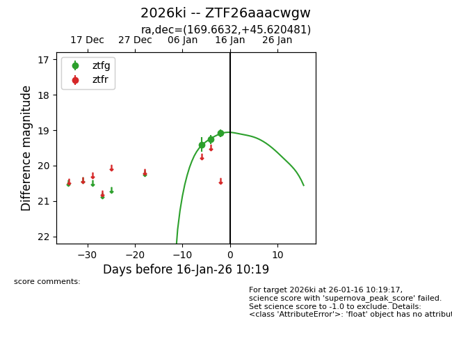
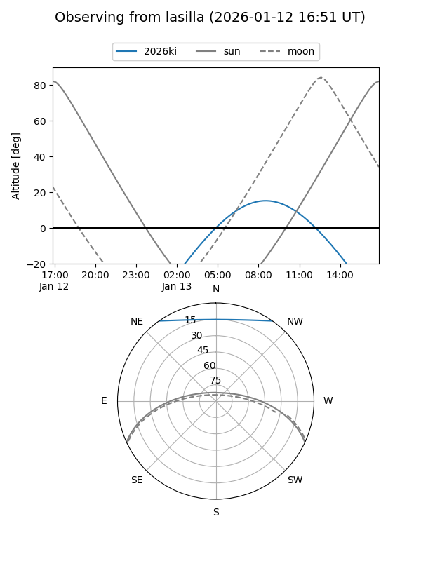
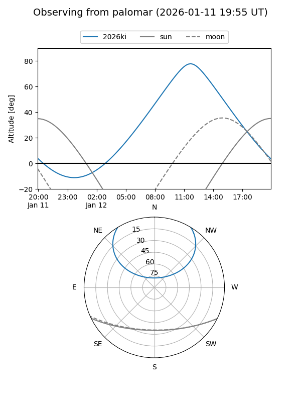
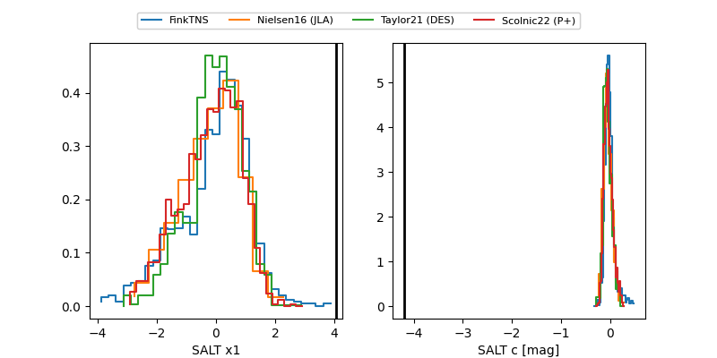

2026ki
Target 2026ki at 2026-01-14 10:15
Aliases and brokers:
FINK: link
Lasair: link
ALeRCE: link
TNS: link
YSE: link
alt names
ZTF26aaacwgw (ztf,fink_ztf)
2026ki (tns,yse)
Coordinates:
equatorial (ra, dec) = 169.6632,+45.62048
equatorial (HMS+DMS) = 11:18:39.17,+45:37:13.73
galactic (l, b) = (161.7055,+63.90257)
Flags:
Photometry:
last ztfg=19.26
2 ztfg detections
Lightcurve

Visibility


Additional plots
